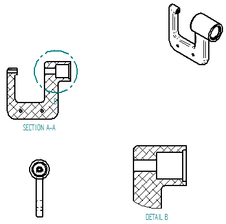
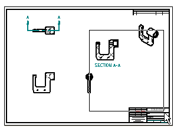
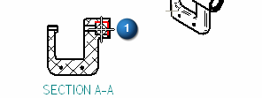
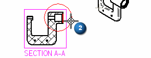
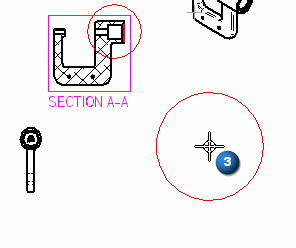

Create a detail view

In the next few steps, create a detail view as shown above.
Use detail views to show magnified areas on a drawing view. Specify the scale of the detail view. The detail view updates automatically when modifying the source view or moving the detail view circle on the source view.

At the bottom-right side of the Solid Edge application window, choose Zoom Area  .
.
Zoom into the area shown in the illustration above.
After resizing the view area, right-click to exit the Zoom Area command.
Choose Home tab→Drawing Views group→Detail command .
Review the options on the Detail command bar. You can use them to define the detail view scale, and choose whether to use a circular detail view or draw a custom shape for the detail view.
For this tutorial, use the default options.
Position the cursor over the section view as shown and click to define the center of the detail view circle (1).

Move the cursor to the side, and then click to specify the diameter of the detail view envelope (2), as shown below.

Move the cursor to position the detail view on the drawing, and then click (3), as shown below.

-
On the Quick Access toolbar, choose Save
 .
.